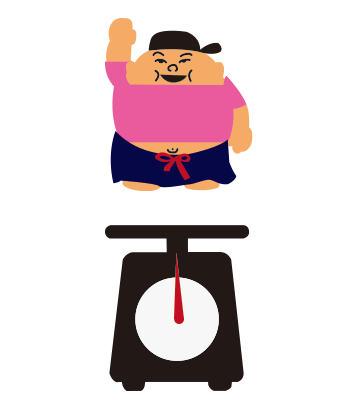

Interview
人生の転機
今回mizui（質問者）はメディアデザイン演習の課題で、アルバイト先であるハワイアンカフェ「コナズ珈琲」の社員さんに、20代の頃に起きた人生の転機について質問することになった。

 読む
読む
第一章
コナズ珈琲に入ったきっかけ
mizui
じゃあ本日はよろしくお願いします
はい、よろしくお願いします。
mizui
えー、じゃあまず、自己紹介の方お願いします。
自己紹介。えー、一色春信（いっしき はるのぶ）です。31歳です。えー、独身です。
mizui
あと体重とかも。
一色さん
体重は、体重は0.1トンですね

mizui
0.1トン。
一色さん
はい。
mizui
えっと、じゃあ、本題に入りますね。今回僕、「人生の転機」っていうテーマでインタビューしてるんですけど、
mizui
一色さんがなんで今、このコナズ珈琲で働いてんのかなっていうのを、お聞かせください。
一色さん
なんでコナズ珈琲に入ったきっかけってことかな？
mizui
そうっすね。
一色さん
前の、前職が飲食初めてやって、飲食いいなと思って。前の会社3～4年おったんやけど。
mizui
はい。
一色さん
で、同業他社なんよ、実は。
mizui
同業他社？
一色さん
すき家と吉野家みたいな。ローソンとファミマみたいな。同業他社やったんやけど。
mizui
はいはい。
一色さん
そん時に、同業他社としてライバル視察として、コナズ珈琲よう来よって。
mizui
へえー。
一色さん
その中で、もうコナズ珈琲のものをパクったりとかもしよったし。とりあえずコナズ珈琲のこと取り入れたりとかもしよったから、マジで。
mizui
マジっすか？
一色さん
原宿とか、お台場とかその辺にあったあの……、フランチャイズで働きよったんよ。
mizui
フランチャイズ。
一色さん
だからその中のフランチャイズの中で、言うたらコナズ珈琲の「あ、いいな」と思ったこと取り入れたこといっぱいあるし。
mizui
なるほど。
一色さん
そうそう。で、そん時に、次第に行きよったら、もうコナズ珈琲めっちゃいいお店やな……
一色さん
こう色々調べよったら、会社とか調べるのめっちゃ好きやから。
一色さん
「ああまあ、いいな」と思って。前の会社辞めたタイミングで、もう辞めるんやったらもう一回コナズ珈琲で入りたいなと思って。
mizui
あ、そうなんすね。
一色さん
そうそう。前の会社の経験を生かして、キャリアアップできるかなっていうところで、コナズ珈琲に入った。リアルな話したら。
mizui
なるほど。。